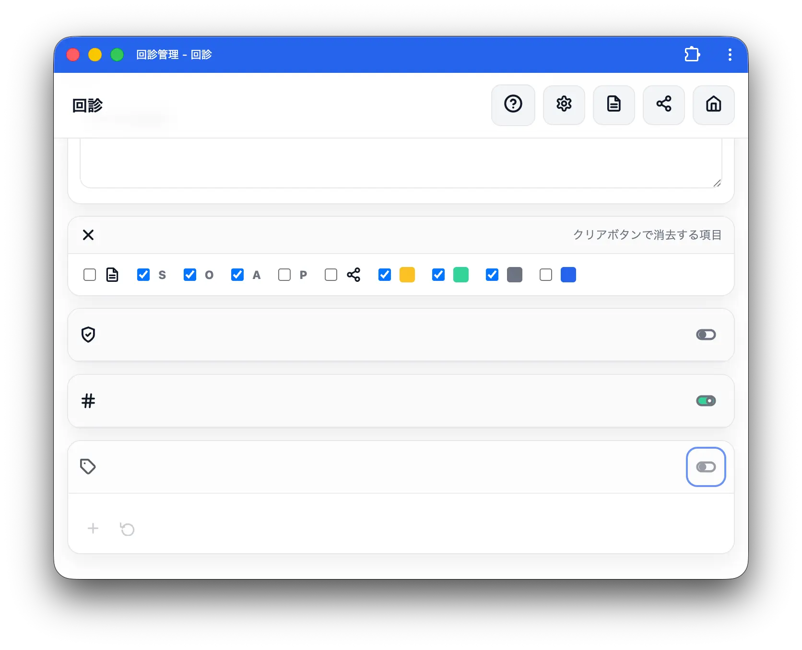
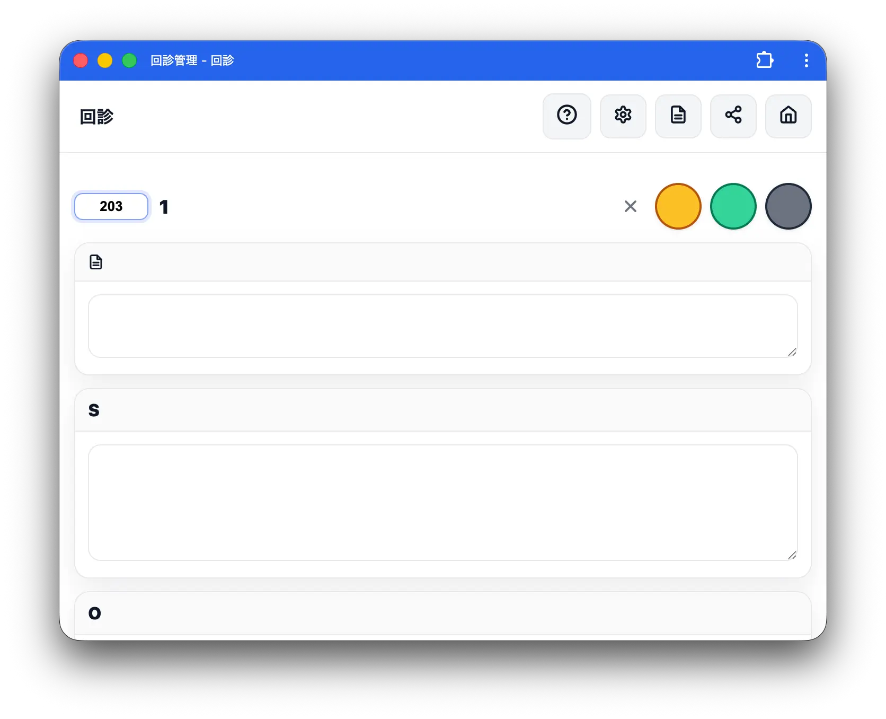
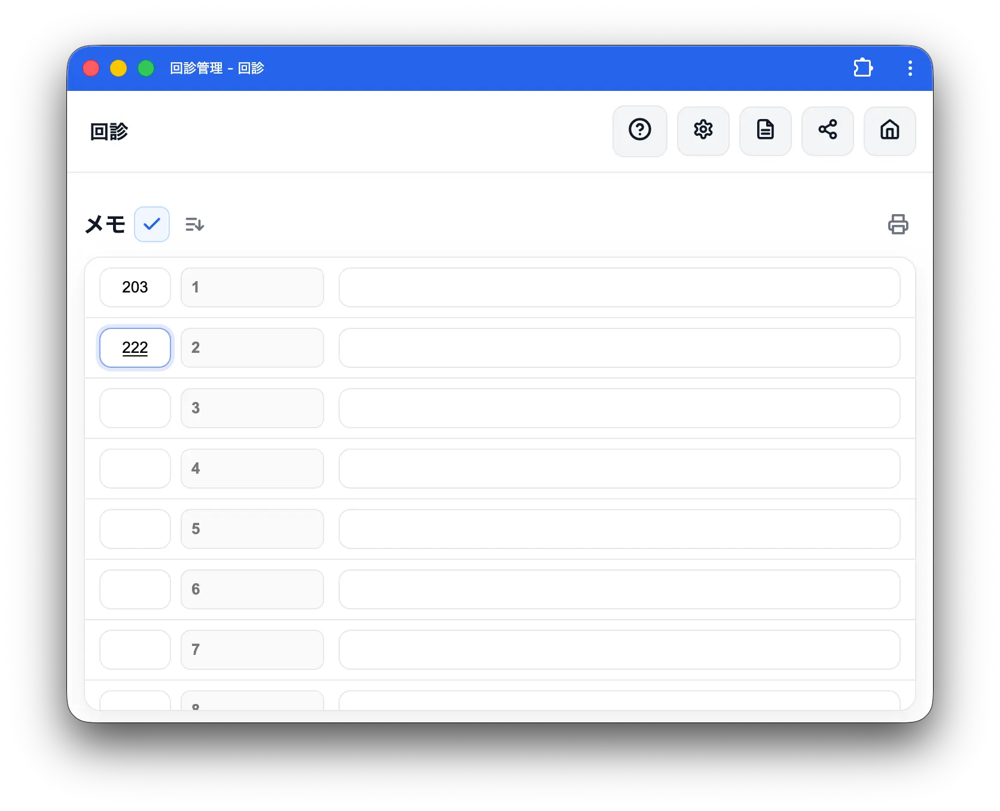
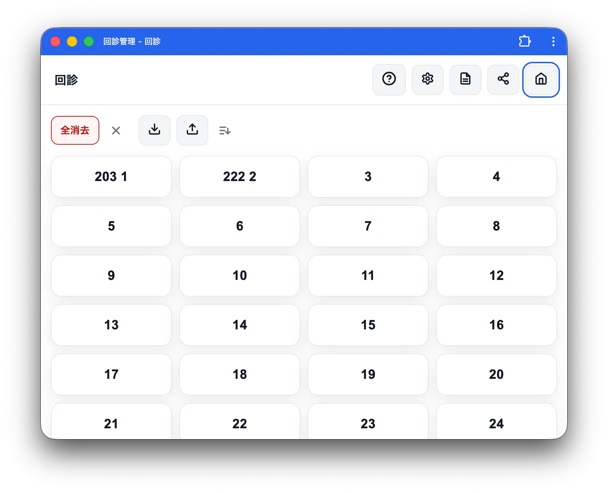
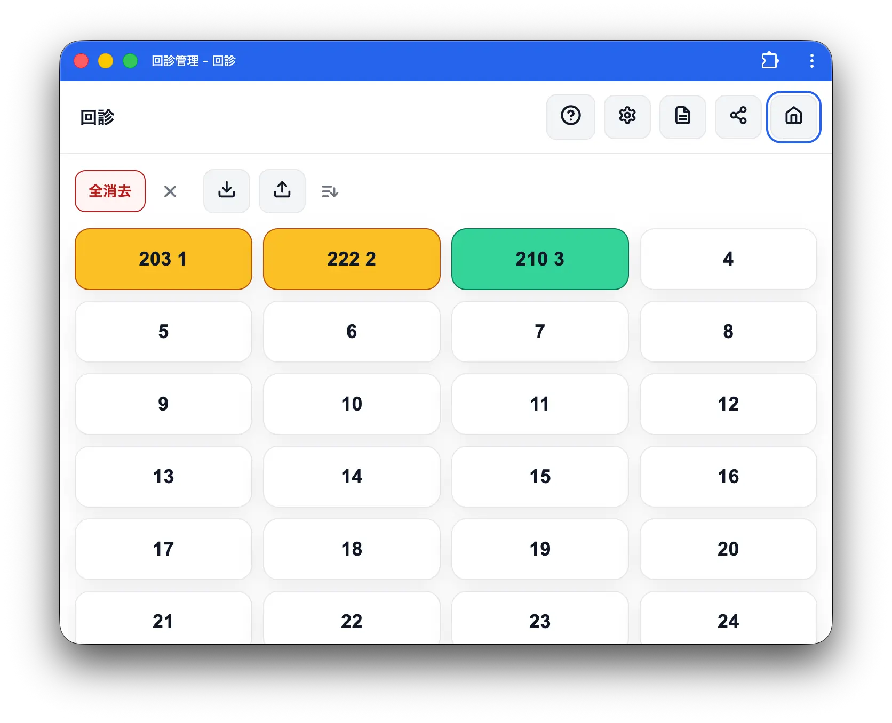
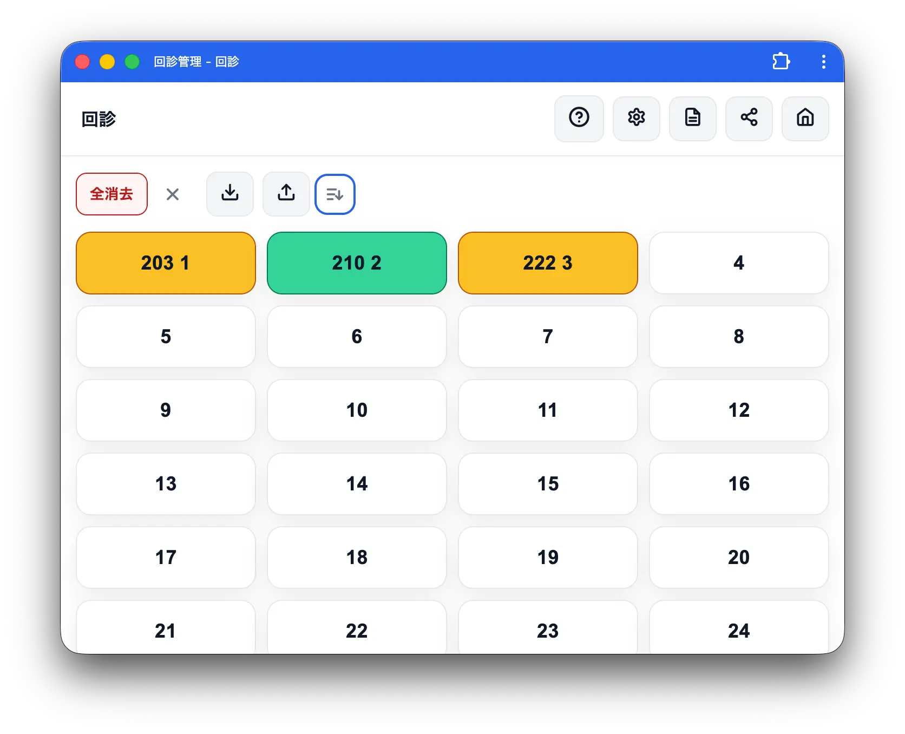

部屋番号機能
部屋番号機能は、患者ごとに 部屋番号（数字） を登録し、患者ボタンに反映したり、部屋番号順に並べ替えたりできる機能です。
有効化

部屋番号機能は デフォルトでオフ です。
- ヘッダーの ⚙ 設定 を開く
- 部屋番号 カード（# アイコン）の右上にあるトグルをタップ
- トグルが緑になればオン
設定はオン／オフの切り替えだけで、登録項目はありません。オンにすると各画面で部屋番号の入力欄や表示が出現します。
部屋番号の入力
患者画面

部屋番号機能オン時、患者名の 左に部屋番号の入力フォーム が現れます。
- 数字のみ入力できます（英字や記号は自動で除去されます）
- 最大6桁
- 空欄も可
メモ画面・共有画面（編集モード）

編集アイコン（鉛筆）をタップして編集モードに入ると、各行の患者名の左に部屋番号入力欄が現れます。
患者ボタンの表示

部屋番号機能オン時、各画面の 患者ボタン の表記が変わります：
- 部屋番号が入力されている場合：
部屋番号 患者名の形式（例：301 田中太郎） - 部屋番号が空欄の場合：従来通り患者名のみ（先頭にスペースは入りません）
- 患者名が空欄の場合：部屋番号 + 元の位置番号（例：
301 5）
ホーム画面の患者ボタン、メモ・共有一覧の患者ボタン、いずれも同じルールで表示されます。
部屋番号順への並び替え

部屋番号機能オン時、以下の画面に ソートアイコン が出現します：
- ホーム画面：保存アイコンの右（タグフィルターの右）
- メモ画面：編集アイコンの右
- 共有画面：編集アイコンの右

タップすると確認ダイアログが出て、OK を選ぶと 全患者を部屋番号の昇順 に並び替えます。
並び替えのルール
- 部屋番号がある患者を昇順に並べる（数値として比較）
- 部屋番号が 空欄の患者は末尾 にまとめられる
- 並び替え後も、現在開いている患者の選択は維持されます
⚠️ データそのものの並び順が変わります。元に戻すには、手動で並び替え直すかドラッグ操作で順序を入れ替えてください（取込・保存で元状態を保管しておくと安心です）。
データの扱い
- データの保存／取込（データの取込・保存）に含まれます
- 機能オフ時も部屋番号データは消去されません。再度オンにすればそのまま表示されます